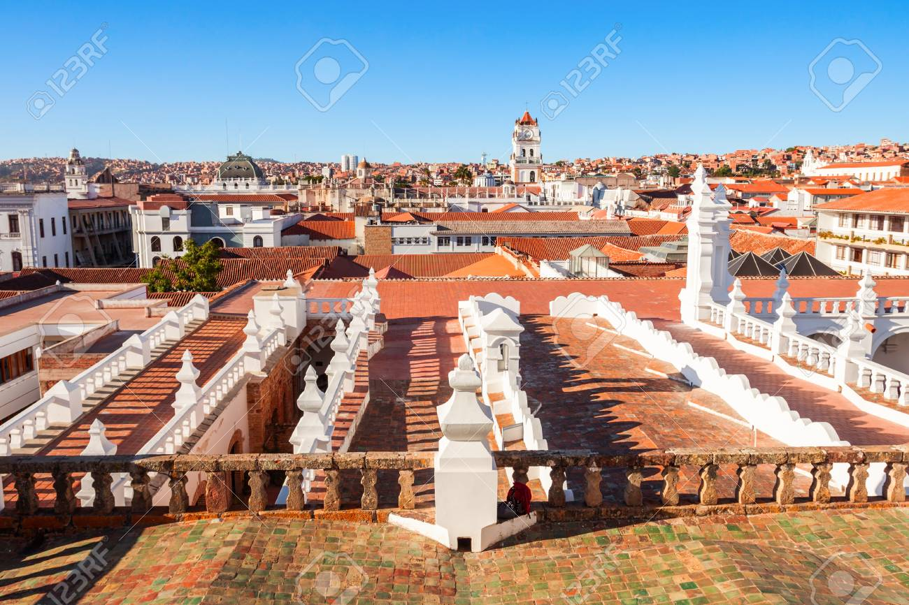
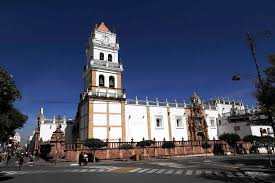
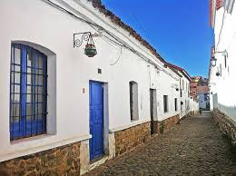
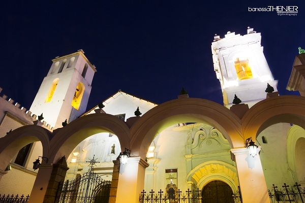

Descubre la Ciudad Blanca de América
Sucre, la capital constitucional de Bolivia, es una ciudad llena de historia y cultura. Sus calles coloniales y su arquitectura blanca la convierten en un destino imperdible.




Explora Sucre en Video
Desde sus impresionantes museos hasta sus vibrantes mercados, Sucre ofrece una experiencia única para todos los visitantes.